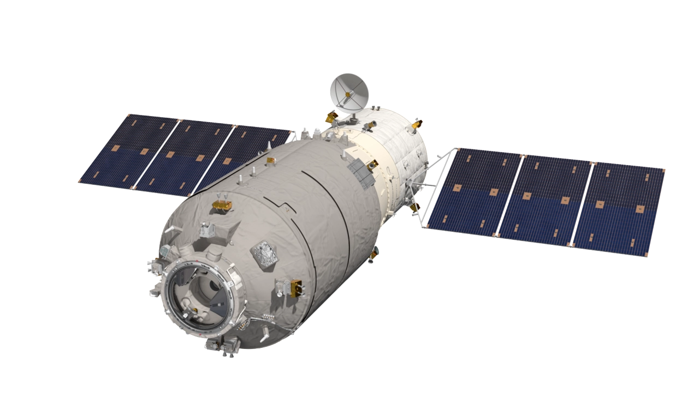
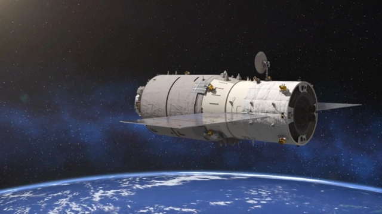

天舟系列货运飞船的主要作用是为中国空间站在轨运行期间提供补给支持，天舟三号是其中一员。
北京时间2021年9月20日，长征七号遥四运载火箭 搭载天舟三号货运飞船，在海南文昌航天发射场成功发射。 [7] [9] [11] 天舟三号装载了航天员生活物资、舱外航天服、出舱消耗品、空间站平台物资以及部分载荷和推进剂等，与天和核心舱及天舟二号组合体完成交会对接后，转入三舱（船）组合体飞行状态。 [12]
天舟三号是中国空间站关键技术验证及建造阶段的第五次飞行任务。 按照任务规划，天舟三号货运飞船装载了航天员生活物资、舱外航天服及出舱消耗品、空间站平台物资、部分载荷和推进剂等，与空间站组合体完成交会对接后，转入组合体飞行段，为空间站在轨建造后续飞行任务奠定基础。 [8] 北京时间2021年10月16日，神舟十三号载人飞船发射取得圆满成功。天和核心舱和天舟二号、天舟三号组合体已进入对接轨道 ，状态良好，满足与神舟十三号交会对接的任务要求和航天员进驻条件。
2022年4月20日，天舟三号货运飞船完成绕飞和前向交会对接 [18] 。2022年7月17日10时59分，天舟三号撤离空间站组合体，将择机载入大气层 。
2011年，天舟系列立项。 [14]
在充分继承天舟二号货运飞船研制和飞行成果基础上，天舟三号货运飞船还开展了系统优化设计，简化平台配置，提高运输效率，推动元器件自主可控，因而具有：贮箱动态调整、持续提高元器件国产化率和优化设备配置三个显著的任务特点。
针对空间站关键技术验证和建造阶段整个研制任务存在发射密度高 、发射场飞控多线并行等特点，货运飞船系统采用组批生产模式进行研制。天舟三号货运飞船的主要研制思路和特点体现在批次技术状态一致、设备/整船滚动备份、平台与货物(载荷)研制解耦、通用/专用文件管理、统一产品保证管理五个方面.

2021年5月18日，据中国载人航天工程办公室主任郝淳介绍 ，天舟三号货运飞船于9月实施飞行任务。
2021年8月16日，执行天舟三号飞行任务的长征七号遥四运载火箭已完成出厂前所有研制工作，安全运抵文昌航天发射场。长征七号遥四运载火箭将与先期已运抵的天舟三号货运飞船一起按计划开展发射场区总装和测试工作。执行神舟十三号飞行任务的载人飞船及运载火箭，正在酒泉发射场按计划同步开展各项准备工作。
2021年9月16日，天舟三号货运飞船与长征七号遥四运载火箭组合体已垂直转运至发射区。文昌航天发射场设施设备状态良好，后续将按计划开展发射前的各项功能检查、联合测试等工作。 [4-5]
2021年9月20日，据中国载人航天微信公众号消息，长征七号遥四运载火箭已完成推进剂加注，计划于北京时间2021年9月20日15时许发射天舟三号货运飞船。
北京时间2021年9月20日15时10分，搭载天舟三号货运飞船的长征七号遥四运载火箭，在我国文昌航天发射场点火发射，约597秒后，飞船与火箭成功分离，进入预定轨道，
[13]
15时22分，飞船太阳能帆板顺利展开且工作正常，发射取得圆满成功。后续，天舟三号货运飞船将与在轨运行的空间站组合体进行交会对接。
[7] [9] [11]
天舟三号货运飞船入轨后顺利完成入轨状态设置，于北京时间2021年9月20日22时08分，采用自主快速交会对接模式成功对接于空间站天和核心舱后向端口，整个过程历时约6.5小时。天舟三号装载了航天员生活物资、舱外航天服及出舱消耗品、空间站平台物资、部分载荷和推进剂等，与天和核心舱及天舟二号组合体完成交会对接后，转入三舱（船）组合体飞行状态。
天舟三号货运飞船的主要任务是为空间站运输、存贮货物；运输、补加推进剂;并将废弃物收集、存放，带回大气层销毁。天舟三号任务是空间站关键技术验证及建造阶段的第二次货物运输应用性飞行，货运飞船为满载状态，运载了可支持3名航天员6个月的在轨驻留物资、空间站备份设备、空间科学载荷等货物。此外，还携带了补加推进剂等上行物资，在停靠期间还具备并网供电能力，可以为空间站提供供电支持。